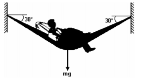
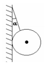
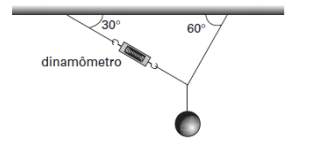
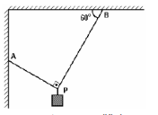

01.
Quando um homem está deitado numa rede (de massa desprezível), as forças que esta aplica na parede formam um ângulo de 30° com a horizontal, e a intensidade de cada uma é de 600 N (ver figura adiante).

a) Qual é o peso do homem?
b) O gancho da parede foi mal instalado e resiste apenas até 130 N. Quantas crianças de 30 kg a rede suporta? (suponha que o ângulo não mude).
02.
Na figura a seguir, uma esfera rígida se encontra em equilíbrio, apoiada em uma parede vertical e presa por um fio ideal e inextensível. Sendo P o peso da esfera e 2P a força máxima que o fio suporta antes de arrebentar, o ângulo formado entre a parede e o fio é de:

|
a) 30°. b) 45°. |
c) 60°. d) 70°. |
e) 80°. |
03.
Um professor de física pendurou uma pequena esfera, pelo seu centro de gravidade, ao teto da sala de aula, conforme ao lado: Em um dos fios que sustentava a esfera ele acoplou um dinamômetro e verificou que, com o sistema em equilíbrio, ele marcava 10N. Calcule o peso, em newtons, da esfera pendurada.

|
a) 5√3. b) 10. |
c) 10√3. d) 20. |
e) 20√3. |
04.
A figura mostra um peso de 44 N suspenso no ponto P de uma corda. Os trechos AP e BP da corda formam um ângulo de 90°, e o ângulo entre BP e o teto é igual a 60°. Qual é o valor, e newtons, da tração no trecho AP da corda?
